Intro to Git and GitHub
Version Control and Collaboration for Any Project
Rachael Arnold • @raevenfea • rae.arnold@gmail.com
Vermont Works for Women • Step Up to IT
{kind=link}
What is  ?
?
Git is an open-source, distributed version control system. It:
- tracks changes to documents
- makes collaboration easy
- keeps copies on every users’s computer
- makes recovering previous changes possible
- helps with worry-free experimenting
- and more…
Interacting with Git
Graphical User Interface (GUI)

Interacting with Git
Command Line Interface (CLI)

What is  ?
?
GitHub is a web-based host for Git repositories and:
- allows users to collaborate
- makes open-source code changes simple
- has a built-in bug tracker
- hosts simple websites from your repositories
- and much, much more…
Interacting with GitHub
Browser (GitHub.com)

Interacting with GitHub
Bowser (view of a project page)

Keeping it all straight:
We're using GitHub’s GUI for Git in this workshop.
A bit confusing, right? If it helps:
Things in the desktop application:
Git
(all about version control)
Things in the browser:
GitHub
(collaborating with the outside world)
Git Basics
Commands we’re going to learn:
Note: the following examples show both the GUI and CLI versions for reference, but don’t mix them when you’re working or you’ll end up with weird errors.
Please follow along on your own computer, and ask questions if you’re stuck!
Start Your Projekt (init)
GUI
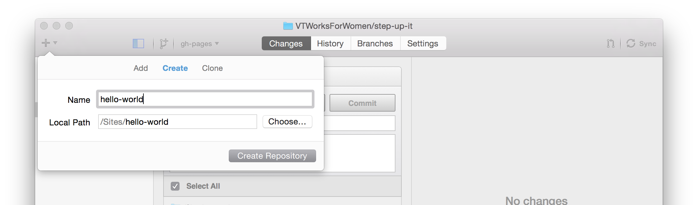Git Basics: init
CLI
hello-world$ git initTell Git About Changes (add)
Create a README.md and save to your project directory
We call this staging files.
GUI—Check the box next to files with changes you want to commit.
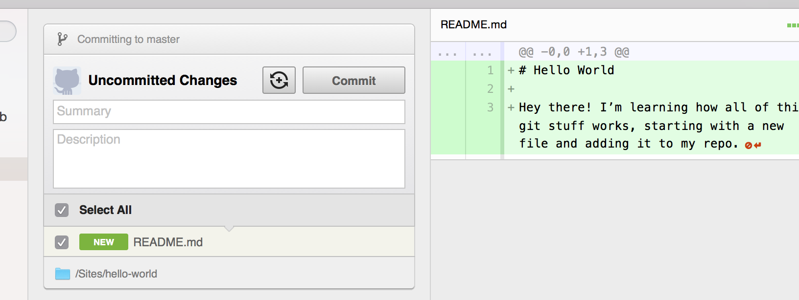Git Basics: add
CLI
hello-world$ git add README.mdWhat’s Going on Right Now? (status)
GUI—you don’t have to do anything but look
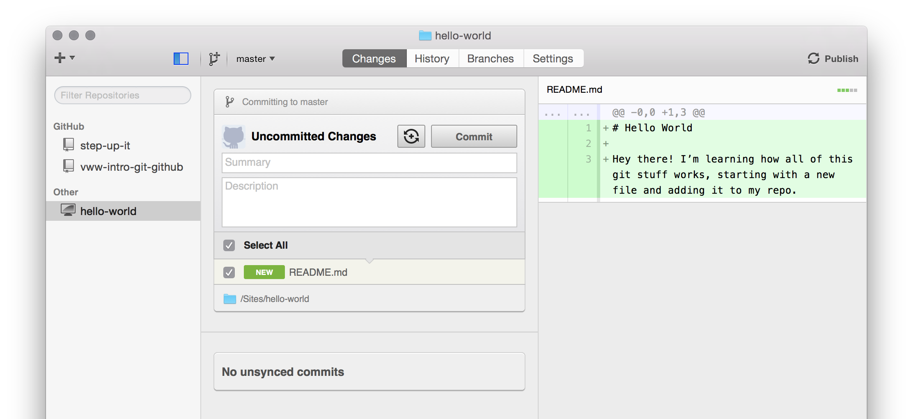Git Basics: status
CLI
hello-world$ git status
On branch master
Initial commit
Changes to be committed:
(use "git rm --cached ..." to unstage)
new file: README.md
hello-world$
Tell Git to Save Your Changes (commit)
GUI—type a summary and hit Commit
Git Basics: commit
The status after commit
BUI
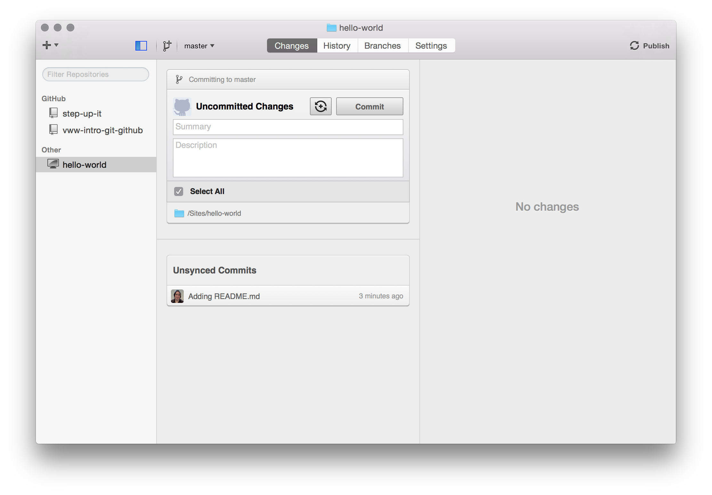Git Basics: commit
CLI
hello-world$ git commit -m "Adding README.md"Git Basics: commit
The status after commit
CLI
hello-world$ git status
On branch master
nothing to commit, working directory clean
hello-world$
How Do I Commit Only Some Files?
GUI—uncheck what you don’t want before you commit
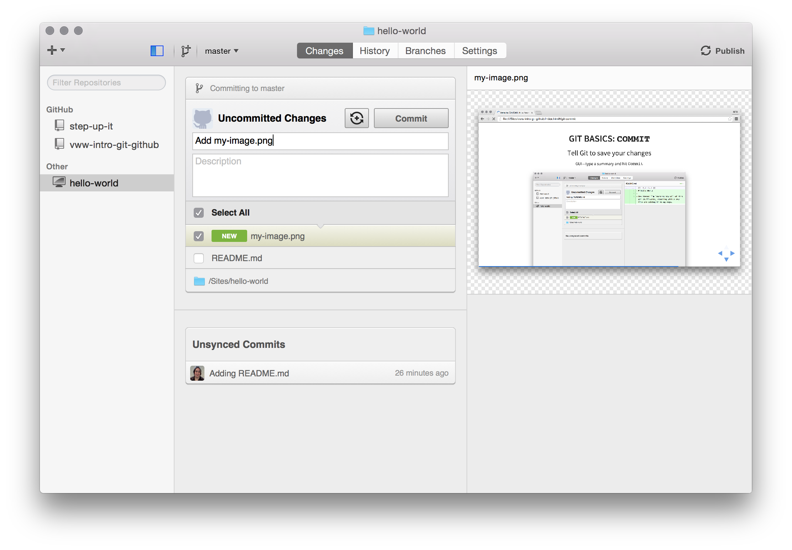Git Basics: reset
The status after committing—README.md still contains changes, but hasn't been committed.
GUI
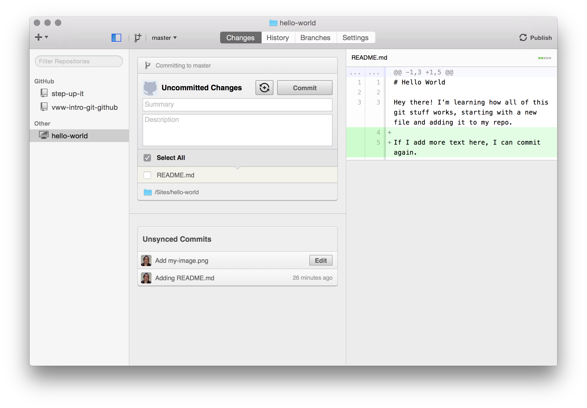Git Basics: reset
In the CLI, add only the files you want to commit. If you add a file you don’t want to commit, use reset to unstage the file.
CLI
hello-world$ git add README.md
hello-world$ git add my-image.png
hello-world$ git reset HEAD README.md
Unstaged changes after reset:
M README.md
hello-world$
Git Basics: reset
The status after reset. Note that status provides helpful reminders for how to add or remove files from the staging area.
CLI
hello-world$ git status
On branch master
Changes to be committed:
(use "git reset HEAD ..." to unstage)
new file: my-image.png
Changes not staged for commit:
(use "git add ..." to update what will be committed)
(use "git checkout -- ..." to discard changes in working directory)
modified: README.md
hello-world$
Show Me What I’ve Dun (log)
GUI
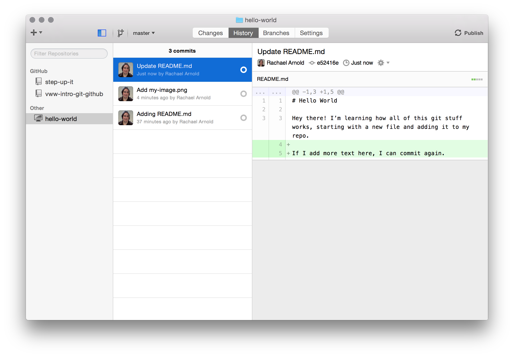Git Basics: log
CLI
hello-world$ git log
commit e52416ead5588a1a8e8304d4523729a4dd3a9cf3
Author: Rachael Arnold
Date: Mon Feb 16 22:32:05 2015 -0500
Update README.md
commit 5dd358670179622c7640182439837d67883f8882
Author: Rachael Arnold
Date: Mon Feb 16 22:27:44 2015 -0500
Add my-image.png
commit 24d8c59bc4a6c817721412762c29e2454626d1d1
Author: Rachael Arnold
Date: Mon Feb 16 21:54:14 2015 -0500
Adding README.md
:q
Git Basics: Branching
Branches make it simple to work on experiments, major content changes, or bug fixes without danger of messing up existing work. You can continue to commit, but it won't change your main code base.
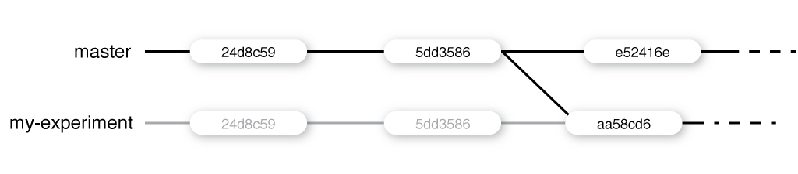How Do I Experiment? (branch)
GUI
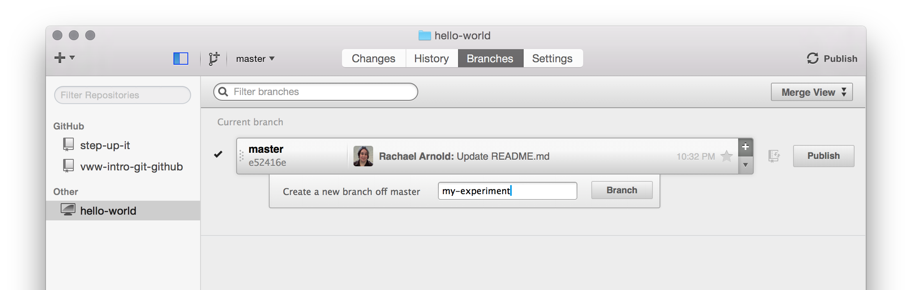 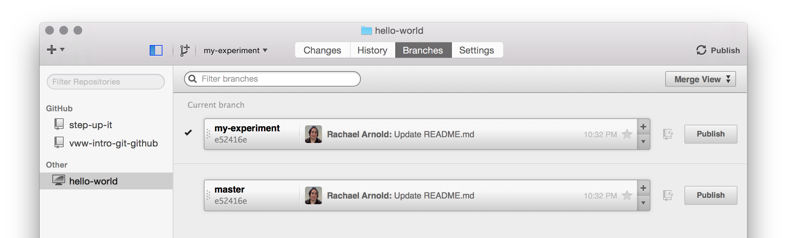Git Basics: branch
CLI
hello-world$ git branch my-experimentHow Do I Switch Branches? (checkout)
GUI
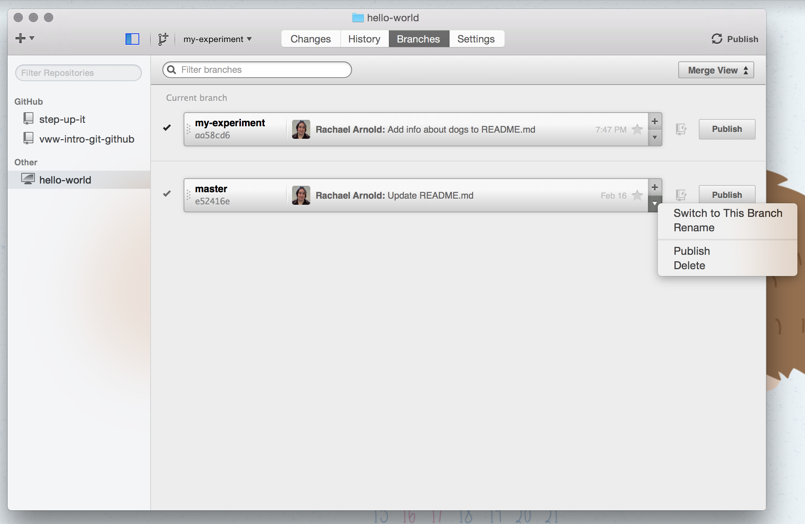Git Basics: checkout
CLI
hello-world$ git checkout masterGit Basics: Merging
Branches aren't much help if they live off on their own forever. Merging allows you to integrate changes from one branch into another.
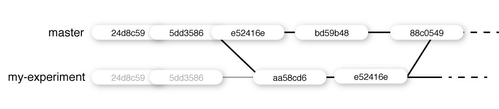How Do I Incorporate Changes? (merge)
GUI
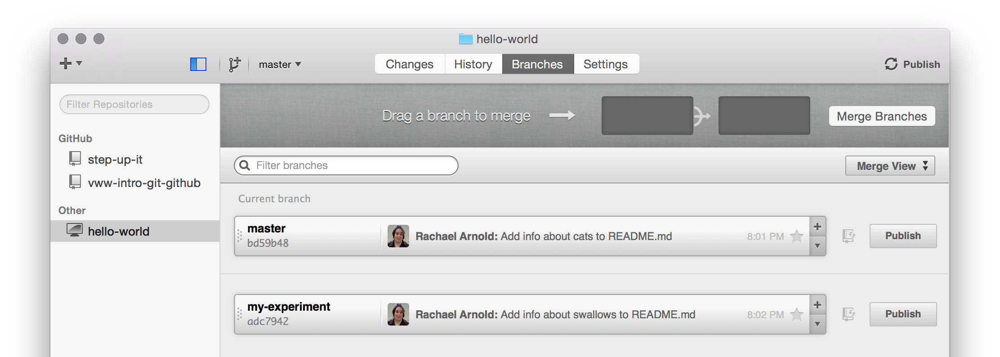 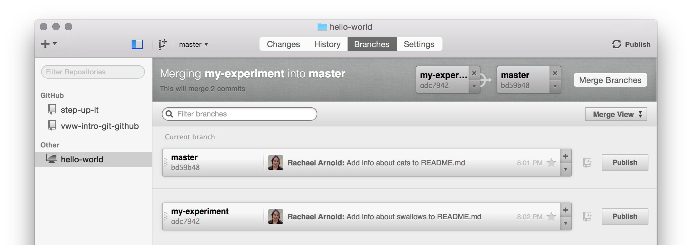Git Basics: merge
CLI
hello-world$ git checkout master
hello-world$ git merge my-experimentOh no, conflicts!
GUI
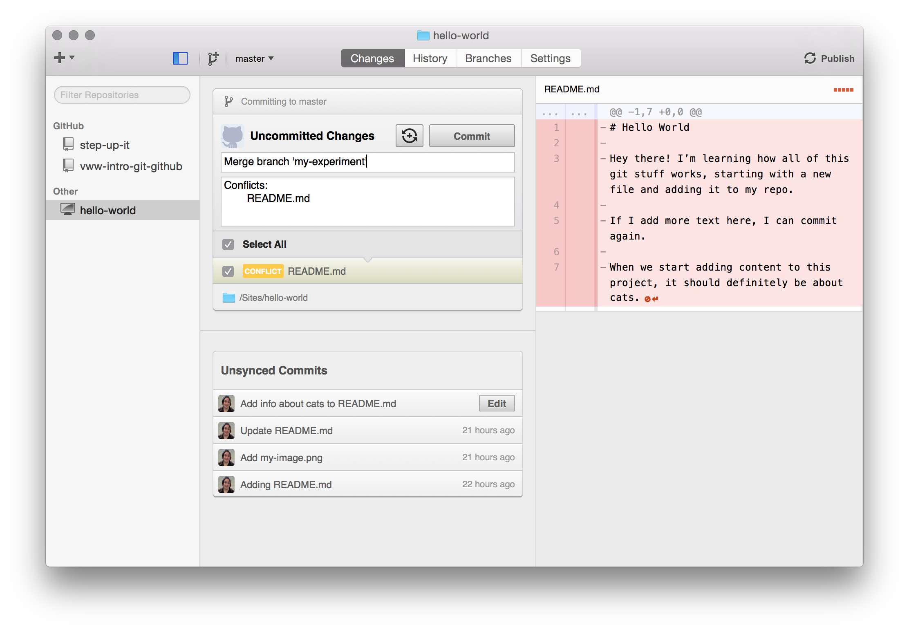Git Bass: merge conflicts
CLI
hello-world$ git status
On branch master
You have unmerged paths.
(fix conflicts and run "git commit")
Unmerged paths:
(use "git add ..." to mark resolution)
both modified: README.md
no changes added to commit (use "git add" and/or "git commit -a")
hello-world$ Resolving Conflicts
To resolve conflicts, edit them in your normal file editor. Make sure to remove all merge flags
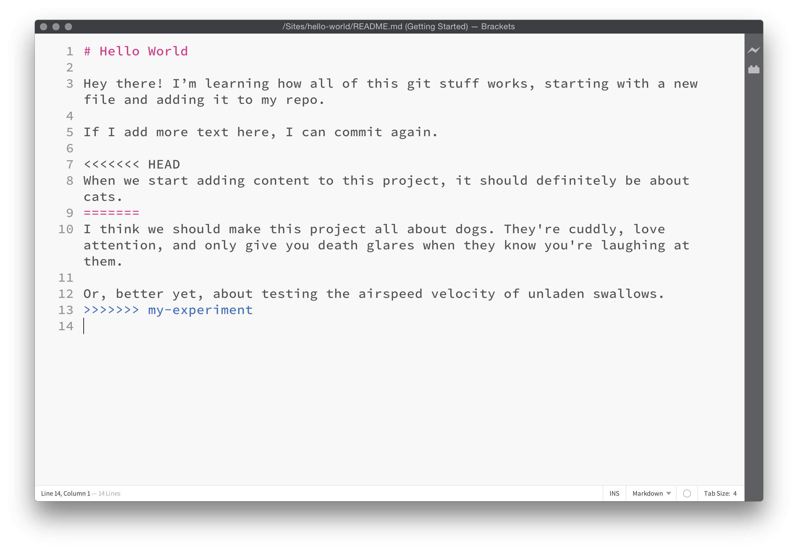Resolving Conflicts
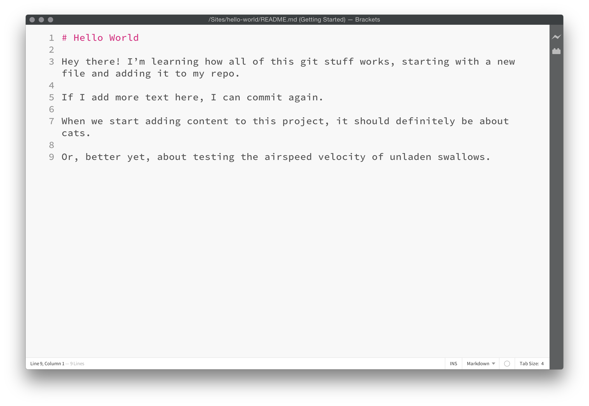Finalizing the Merge
Once you've resolved all the conflicts, commit the changes
GUI
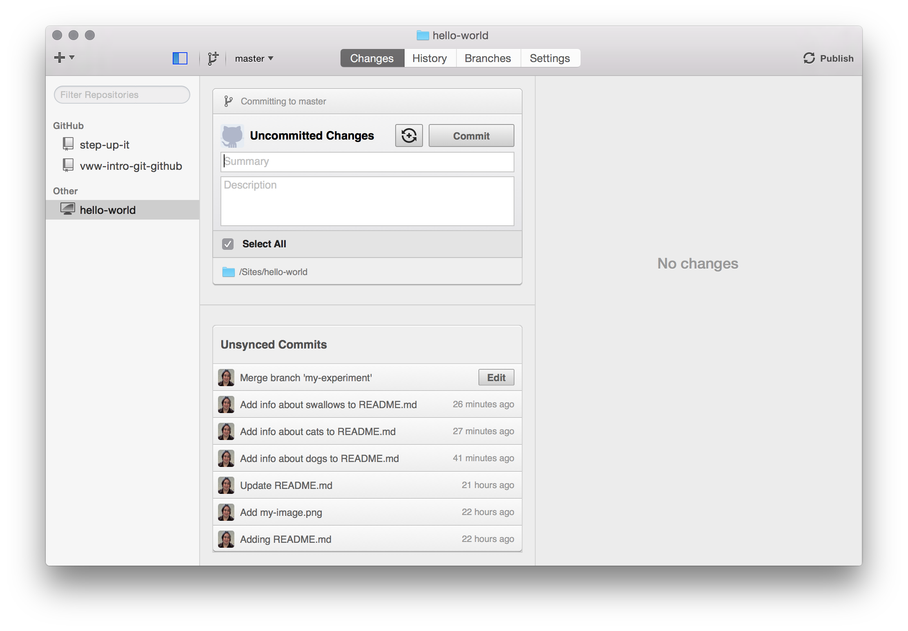Finalizing thrge
CLI
hello-world$ git commit -a -m "Merge branch 'my-experiment'"The -a is a shortcut for git add all the files with changes.
Collaborating
…where GitHub comes in
GitHub Basics
- Setting Up Remotes
Publishing your repository, and syncing changes - Forking Projects
Making a copy of open-source projects for your own use - Creating Pull Requests
Submitting changes to other people’s repos
Publishing Remotely (push)
Share your code with others by publishing to a remote (in this case, GitHub)
GUI
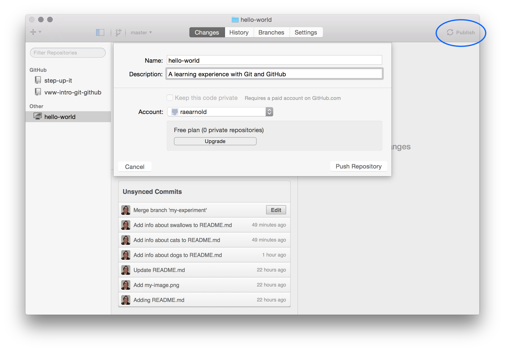Git Basics: remote, push
CLI
hello-world$ git remote add origin git@github.com:username/hello-worldhello-world$ git push origin masterPublishing Remotely
Check it out in the browser on GitHub
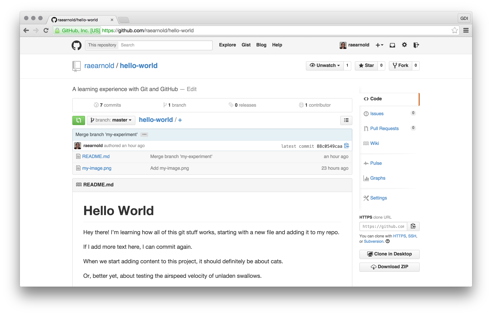Publishing Remotely
You can even edit some files online
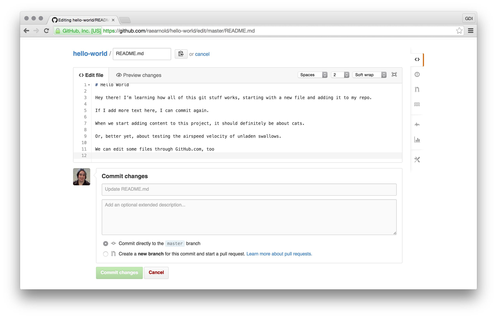Getting Remote Changes (pull)
When other changes are made (by you online, or by others who've pushed), you need to pull your changes.
GUI—GitHub Desktop. makes it easy by changing Publish to Sync
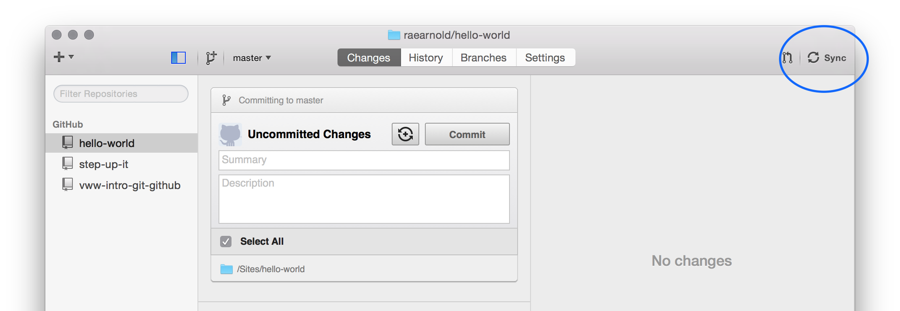Git Basics: pull
CLI
hello-world$ git pull
remote: Counting objects: 3, done.
remote: Compressing objects: 100% (3/3), done.
remote: Total 3 (delta 1), reused 0 (delta 0), pack-reused 0
Unpacking objects: 100% (3/3), done.
From https://github.com/raearnold/hello-world
88c0549..0ede7f1 master -> origin/master
Updating 88c0549..0ede7f1
Fast-forward
README.md | 4 +++-
1 file changed, 3 insertions(+), 1 deletion(-)
hello-world$Forking Projects
Copy projects and work on them in your own repo
Browser
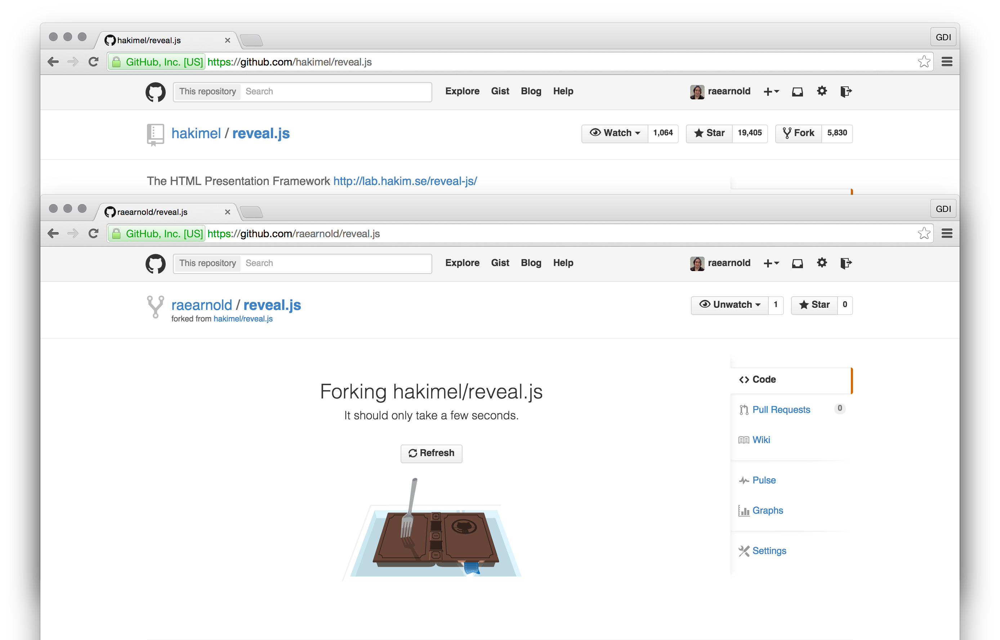Git Basics: clone
Once you’ve fed a project, clone it locally
GUI
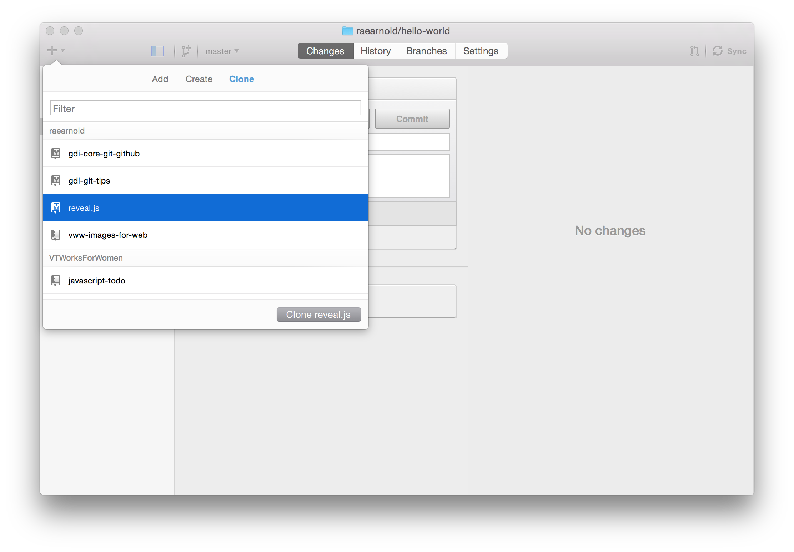Git Basics: clone
fork is unique to GitHub; it’s all about permissions, as you can't contribute directly to repos that you haven't been granted access to. So, fork in the browser.
Then clone the forked repository to your local machine.
CLI
hello-world$ git clone https://github.com/raearnold/reveal.js.gitSubmitting Changes to Other Projects
Once you've commited changes, you can ask the owners of the repositories to include your changes via a pull request.
GUI
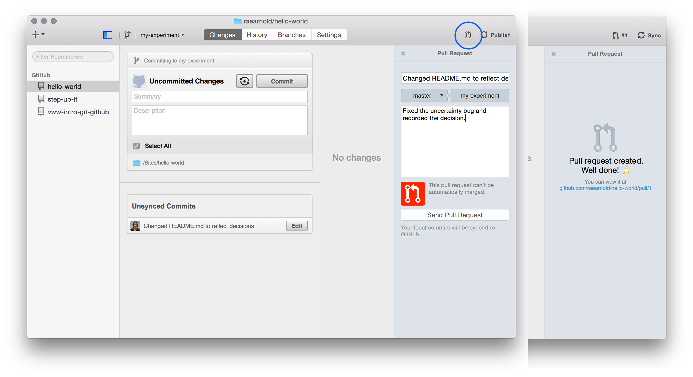Pull Requests
Managing requests is beyond the basics, but this is what the request looks like in-browser.
Mario
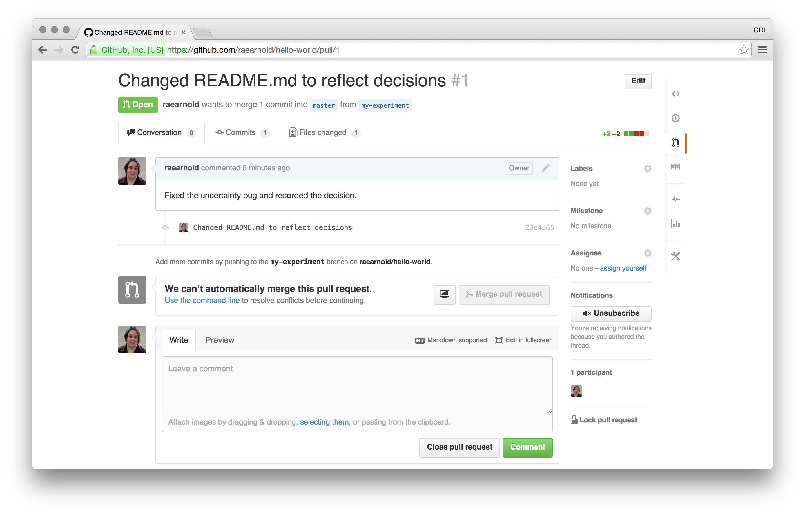Lab Time
- Fix one typo in this presetion and submit a pull request. You can do this through the browser if you prefer.
- Find something interesting, fork it, check out your fork locally.
and